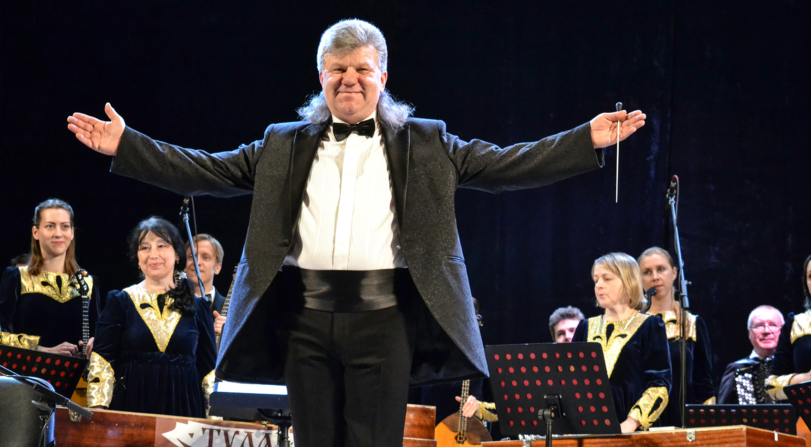

Афиша
Аленичев Владимир Витальевич/h2>
Родился 31 августа 1970 года, Тула
Преподаватель, дирижёр, победитель всероссийских конкурсов и фестивалей. В 1985 году окончил Детскую музыкальную школу № 2 города Тулы (в настоящее время Детская школа искусств имени Г.Г. Галынина) (класс балалайки – Шелепина Елена Владимировна); в 1989 году – Тульское музыкальное училище (в настоящее время – Тульский колледж искусств) имени А.С. Даргомыжского (класс балалайки – Косов Сергей Викторович); в 1996 г. – Рязанский филиал Московского государственного университета культуры (класс дирижирования – Е.П. Семизарова). В 1988 году начал свою педагогическую деятельность в Детской музыкальной школе № 2 города Тулы. С 2001 года в Тульской областной детской музыкальной школе имени Г.З. Райхеля ведёт класс балалайки и класс гуслей звончатых, который был открыт по его инициативе. Из учащихся своего класса создал инструментальные ансамбли «Сказ» и «Тульские гусляры», которые стали многократными победителями различных конкурсов и фестивалей. Детский ансамбль русских инструментов «Сказ» выступал в Концертном зале имени П.И. Чайковского, в Светлановском зале Международного дома музыки, в Концертном зале Российской Академии музыки имени Гнесиных.
Ученики Владимира Витальевич более 500 раз становились лауреатами международных, всероссийских и региональных конкурсов. Среди учащихся его класса – стипендиаты Министерства культуры РФ, победители Общероссийского конкурса «Молодые дарования России». Среди выдающихся достижений в области музыкальной педагогики – подготовка победителей Молодёжных Дельфийских игр России: Зубенко Иоанна – обладатель «Золотой медали» 2018 г. (г. Владивосток); Андрияненко Влада – обладатель «Золотой медали» 2019 г. (г. Ростов-на-Дону). Ученики класса Аленичева В.В. представляли российскую музыкальную культуру в Чехии, Австрии, Франции, Италии, Германии. А в 2017 году приняли участие в открытии XX Пекинского музыкального фестиваля. Многие из его выпускников продолжили своё образование в престижных учебных заведениях страны, некоторые, как их преподаватель, стали заниматься педагогической деятельностью. Так, в ГОУ ДОД «Детская музыкальная школа № 51 города Москвы» преподаёт Мария Волкодав, в МОУ ДОД ЦДТ «Пушкинская школа» Одинцовского района Московской области – Т.В. Криуля. После окончания детской музыкальной школы продолжили образование в ГМК имени Гнесиных Антон Бушинский и Олег Мозговой, в Тульском колледже искусств имени А.С. Даргомыжского Кирилл Тутаев и Давид Манчхашвили. В. Аленичев – лауреат Общероссийского конкурса «Молодые дарования России» в номинации «Лучший преподаватель Детской школы искусств Российской Федерации» – 2009 год.
В 2014 году Владимир Витальевич назначен художественным руководителем и главным дирижёром Оркестра русских народных инструментов «Тула» Тульской областной филармонии имени И.А. Михайловского. При этом он продолжил заниматься педагогической деятельностью. За время работы в оркестре им подготовлены более 70-ти концертных программ. Он стал инициатором проведения ежегодного Областного фестиваля музыкального творчества детей и юношества «Ступеньки мастерства» и Всероссийского фестиваля дирижёров и солистов профессиональных оркестров русских народных инструментов «Серебряные струны» с традиционным участием возглавляемого им оркестра. В.В. Аленичев – участник Первого всероссийского форума «Наставник – 2018», направленного на развитие профессиональной среды наставничества (г. Москва), участник Всероссийской акции «Парад дирижёров», проходившей в Белгороде, Санкт-Петербурге и Петрозаводске (2018 – 2019 гг.) За свою многостороннюю профессионально эффективную деятельность в области культуры и образования постоянно поощряется различными наградами. В их числе:
Федеральные награды: - Почётная грамота Министерства образования и науки Российской Федерации (2008 г.); - Благодарность Министра культуры Российской Федерации (2009 г.); - Почётная грамота Министерства культуры Российской Федерации (2012 г.); - Почётная грамота Российского профсоюза работников культуры (2013 г.).
Областные награды
- Благодарственное письмо Главного федерального инспектора в Тульской области аппарата полномочного представителя Президента РФ в ЦФО (2013 г.); - Благодарности Губернатора Тульской области (2013 г., 2018 г. и 2019 г.); - Медаль «Трудовая доблесть» III степени за выдающиеся заслуги перед Тульской областью, достигнутые трудовые успехи в работе в области культуры (2016 г.).Copyright 2015 IG Design
all rights reserved